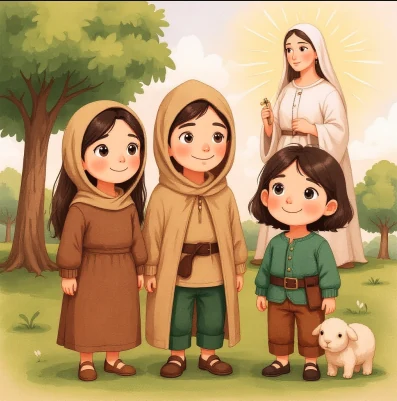

Antes de cambiar el mundo, también fueron peques
Sorolla llenaba de dibujos los cuadernos del cole. Ramón y Cajal se metía en más líos que nadie. Katherine Johnson contaba hasta las estrellas. Cuentos ilustrados de personas reales para que tus peques descubran que ellos también pueden.
esperándote
Encuentra tu próximo imparable
Filtra por colección, elige entre individuales o dúos y llévatelo a casa desde Amazon. Lo difícil va a ser quedarse solo con uno.
Elige tu equipo de imparables
Santos con superpoderes de los buenos, científicos que lo preguntaban todo y músicos que tarareaban hasta dormidos. Tres colecciones ya están en la calle y el resto viene pisando fuerte.
Pequeños por fuera, enormes por dentro
Caben en la mochila, sobreviven a la merienda y se leen en lo que tardas en decir «uno más y a dormir». Spoiler: nunca es uno más.
Un día de mayo, cuidando las ovejas, vieron una luz y una Señora preciosa sobre una pequeña encina.

Detrás de Imparables
Imparables nació el mismo día que nuestra hija, Isabel. La miramos y lo tuvimos clarísimo: queremos que crezca sabiendo que puede ser quien ella quiera. Pintora, científica, astronauta… o las tres a la vez, que para algo es su vida.
¿Y qué mejor manera que conocer a gente de verdad que lo consiguió? Personas que dudaron, metieron la pata y siguieron adelante. Así que nos pusimos a contar sus historias. Primero para ella. Ahora, también para tus peques.
¿Te avisamos del próximo imparable?
Un correo cuando salga libro nuevo y punto. Ni spam ni rollos. Palabra de imparable.